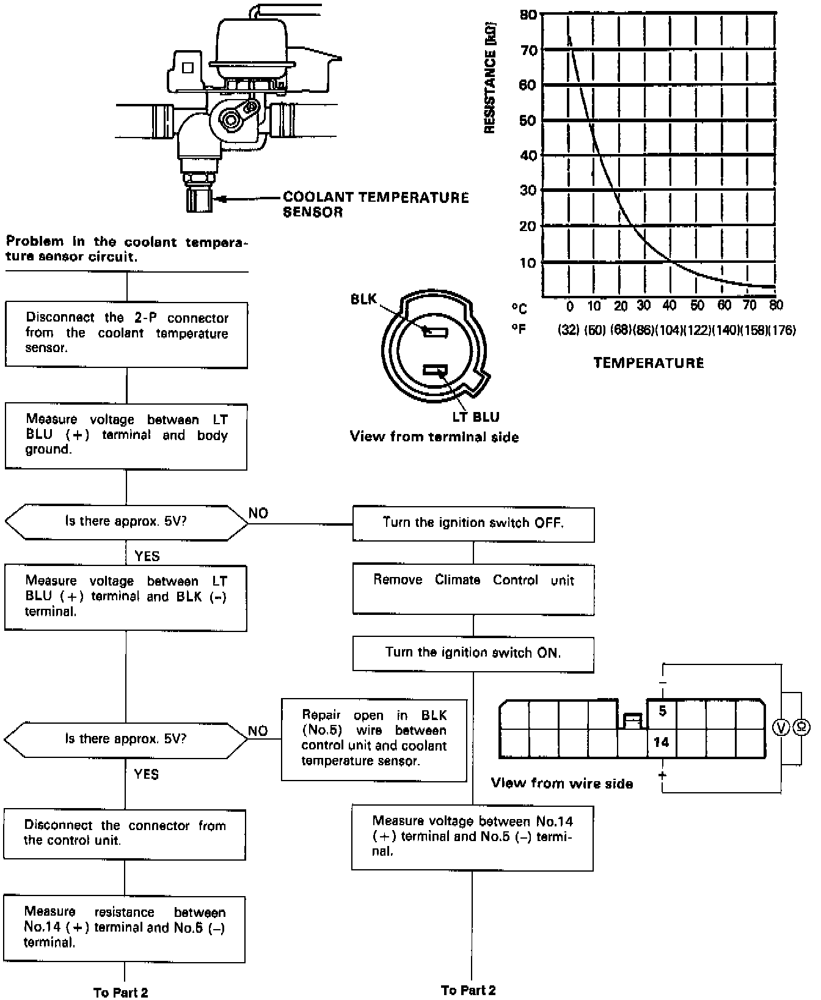
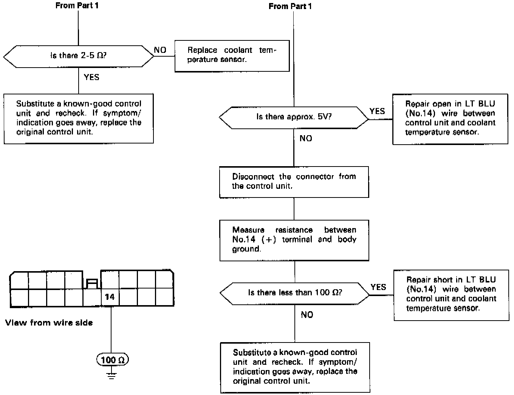

Non-Trouble Code Procedures
Coolant Temperature SensorSelf-diagnosis indicator light B comes on: Indicates a problem in the Coolant Temperature Sensor circuit.
The coolant temperature sensor is a temperature dependant resistor (thermistor). The resistance of the thermister decreases as the coolant temperature increases.

